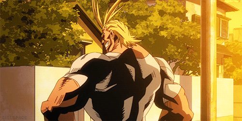
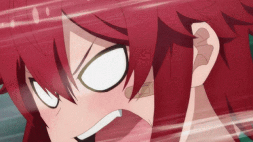
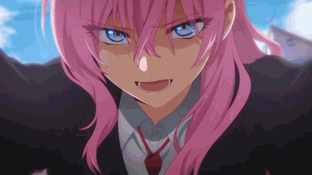

Quais foram os melhores animes dessa temporada até o momento?
Confira quais foram as novidades mais empolgantes do mundo dos Animes em 2023!
Houveram diversas estreias e também o retorno de franquias já consagradas, e neste tópico você irá acompanhar os que mais se destacaram, nessa lista teremos nomes como: "Boku no Hero", "Tomo-chan wa Onnanoko", "Shikimori-San" e MUITO MAIS!
Boku no Hero: Season 6

Boku no Hero, ou "My Hero Academia", conta a história do jovem Izuku Midoriya, que nasceu sem poderes em uma sociedade onde praticamente todos possuem um. Izuku acaba entrando no caminho de All Might, o maior herói do universo da obra, e Midoriya acaba herdando os poderes de seu ídolo, mas tendo que aprender a lidar com tamanho poder que chega até mesmo a destruí-lo, o mesmo segue sua jornada para se tornar o maior herói de todos e superar seu mestre derrotando de vez o terrível All For One junto com seus amigos da 1° classe da U.A.
O que dizer sobre a temporada recente da obra? Simplesmente sensacional! Uma aula de como deve ser o "flow" de uma série, reviravoltas que me fizeram arrancar os cabelos da cabeça e pular de empolgação em alguns momentos. O arco do "Dark Deku" mostra muito bem a dualidade presente no mundo de Boku no Hero, "quem ajuda o herói quando o mesmo sofre"? Além da curva de desenvolvimento de Deku e dos seus companheiros de classe que aos poucos amadurecem ao passar por situações extremas, e tendo que ficar na linha de frente contra os maiores vilões que já existiram até então.
Portanto, Boku no Hero: Season 6, merece uma nota:
9.3!
ALL MIGHT APROVES, PLUS ULTRA!
Se liga no trailer da Season 6!
Tomo-chan wa Onnanoko
O anime conta a história de Tomo, uma bela garota que é apaixonada por seu melhor amigo de infância, Jun. Entrentanto, o jeito "masculinizado" de Tomo faz com que ela pense que Jun não goste dela (o que não deixa de ser verdade), então, ela começa a tentar ser mais "feminina" com o intuito de conquistar seu melhor amigo.
De longe, esse é o meu favorito. É sério. Um anime que conta com personagens extremamente carismáticas, como a Carol e a Misuzu, além dos dois protagonistas que tem um arco de desenvolvimento simplesmente S-E-N-S-A-C-I-O-N-A-L! Foi uma experiência inesquecível, um anime que vai te arrancar muitas risadas, e além disso, muitos sorrisinhos bobos com o passar dos episódios. Uma trilha sonora impecável, animação de qualidade com efeitos visuais muito bem feitos, e um enredo que faz com que os personagens sejam explorados e tenham sua chance de brilhar, e a relação da Tomo e o Jun ir se transformando aos poucos traz uma sensação de vivacidade, como se você estivesse ao lado deles vendo tudo acontecer! Minhas quartas-feiras nunca mais serão as mesmas sem esse anime, que tornou o pior dia da semana em um dia incrível, foram 13 quartas-feiras inesquecíveis.
Tomo-chan é simplesmente PERFEITO em tudo aquilo que se dispôs a apresentar, é realmente uma terapia em forma de animação. E tudo aquilo (e muito mais) que os fãs do mangá queriam ver numa animação, é triste saber que não haverá uma continuação, mas fico muito feliz de ter tido a oportunidade de acompanhar essa obra toda semana!
Portanto, Tomo-Chan wa Onnakoko, merece uma nota:
10!
Obrigado por tudo, Tomo!
Acompanhe o trailer de Tomo-Chan a seguir!
SHIKIMORI’S NOT JUST A CUTIE
Izumi é um jovem naturalmente azarado que namora Shikimori, sua colega de classe. Shikimori é uma garota gentil com um lindo sorriso, e uma namorada carinhosa que é muito feliz ao lado de Izumi… Mas quando Izumi se mete em encrenca, Shikimori se torna uma galanteadora heroína que conquista os corações de todo mundo!
Um anime super divertido, e que tem um par de protagonistas muito carismáticos, e os secundários também não ficam para trás!
Portanto, Shikimori’s not just a cutie, merece uma nota:
8.5!
Tenho medo dessa menina...
